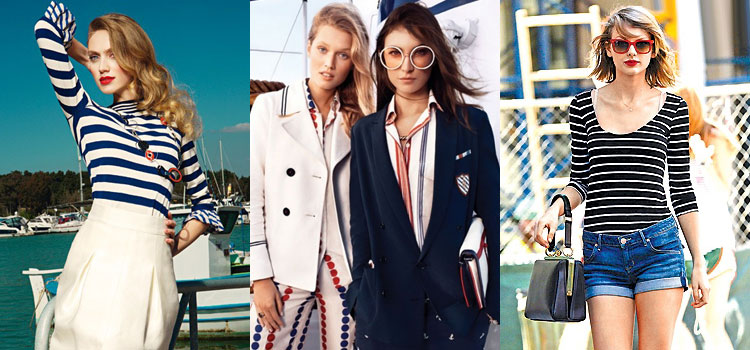
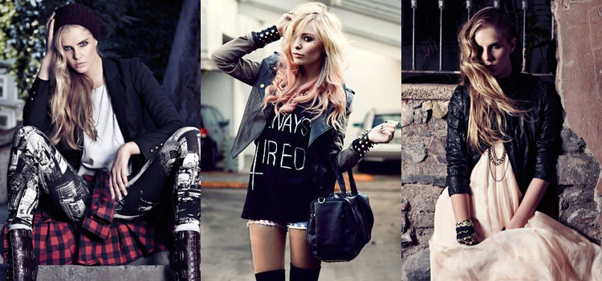
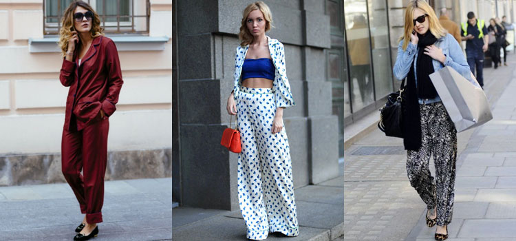
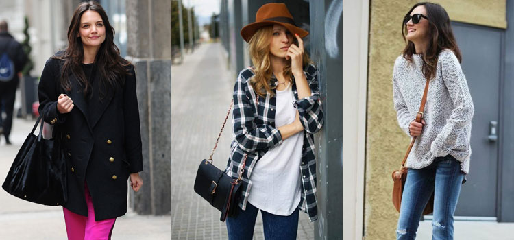

Матросский стиль. Как вы понимаете, в названии отражена вся суть этого стиля. Ему присущи такие элементы как: тельняшка, оттенки синего, шляпки, и вообще все, что как-то ассоциируется с морем. Зачастую это удобная, не сковывающая движений одежда.
Гранж. Если вам известно не понаслышке, что такое бунтарство, то это стиль для вас. Небрежные свитера, рваные джинсы — все это атрибуты данного направления.
Пижамный стиль. Пожалуй один из наиболее сложных, так как здесь важно тонко подбирать вещи дабы пижамный стиль не превратил девушку в замухрышку, которая забыла переодеться, проснувшись утром.
Унисекс. Стиль в котором присутствуют элементы как женского так и мужского гардероба. Проще говоря, унисекс предназначен для подчеркивания силы и мужества в женщине, доброты и нежности в мужчине.
